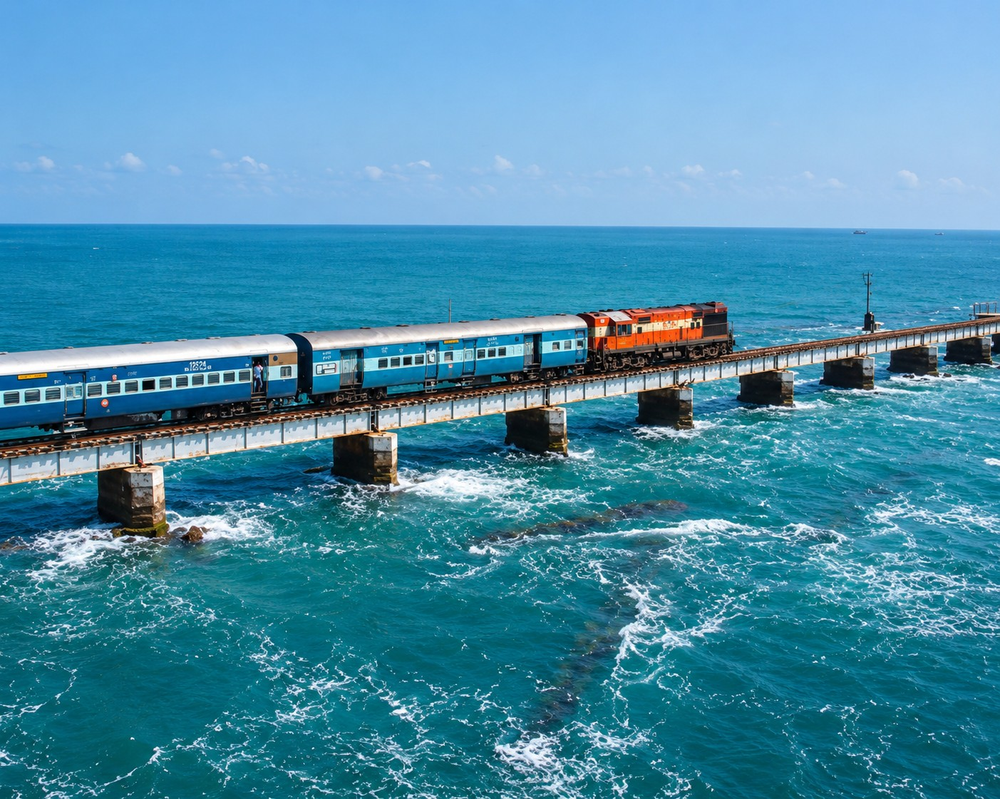
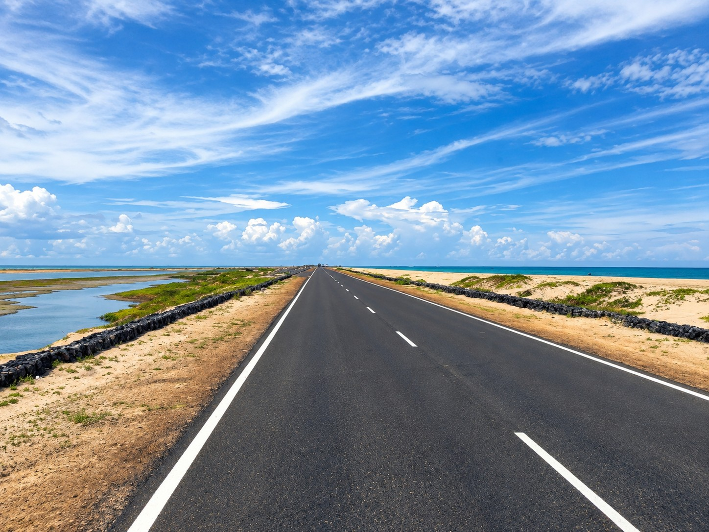

TRAVEL GUIDE & ITINERARIES
Transportation Hubs, 3-Day Journey Plans & Curated Heritage Trails
Scroll to ExploreTRANSPORTATION HUB
Convenient gateways to access Ramanathapuram District by air, rail, and highway network.
BY AIR
Madurai International Airport (IXM) is the closest major airport, situated 120 km west with frequent domestic and international flights. Tuticorin Airport (TCR) lies 135 km south. Regular prepaid taxis and air-conditioned express buses connect both airports directly to Ramanathapuram and Rameswaram.

By TrainBY TRAIN
Rameswaram (RMM), Ramanathapuram (RMD), and Paramakudi (PMK) stations lie along Southern Railway's historic scenic line. Direct superfast and express trains link the district to Chennai (Sethu Express, Rameswaram Express), Madurai, Bengaluru, Tiruchirappalli, Varanasi, and Ayodhya.

By RoadBY ROAD
National Highway NH 87 (Madurai–Dhanushkodi National Highway) and the East Coast Road (ECR / NH 32) offer smooth, scenic driving along the coast. Frequent state transport (SETC, TNSTC) express buses operate round the clock from Chennai, Madurai, Trichy, Coimbatore, and Kanyakumari.
ITINERARY JOURNEY
Three meticulously curated day-wise travel plans to experience the best of Ramanathapuram.
The Sacred Island Pilgrimage
Begin at dawn with purification rituals at Agni Theertham shore, followed by sacred baths in the 22 temple theerthams, architectural exploration of the 1,212-pillar corridor, sunset at Pamban, and paying tribute at Dr. Kalam's Memorial.
Oceans, Ghost Town & Dunes
Journey to the southeastern lands-end at Dhanushkodi, explore the 1964 submerged cyclone ruins, walk the pristine white sands of Arichal Munai, and revisit Pamban for evening boat views.
The Grand District Expedition
A comprehensive grand circuit connecting royal Sethupathi palaces, island wonders, maritime vistas, and the cultural-handloom pride of Paramakudi.
THE SACRED HERITAGE TRAIL
A spiritual and architectural pilgrimage connecting the three most ancient temples in the district.
THE ANCIENT SACRED TRIANGLE
This special spiritual corridor connects the Jyotirlinga of Rameswaram with the 3,000-year-old emerald Nataraja shrine of Thiru Uthirakosamangai and the Divya Desam sanctum of Thiruppullani.